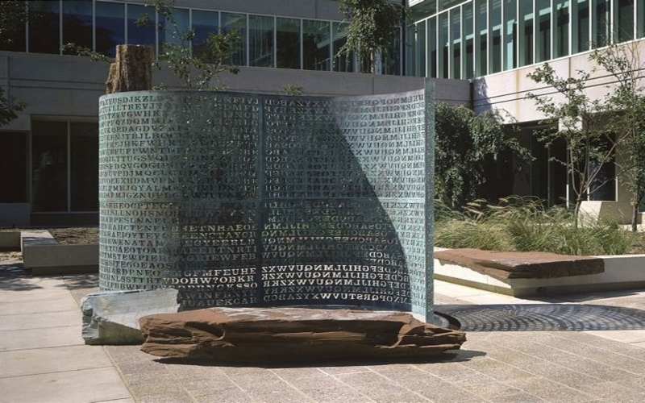

❮
❯

Kryptos, a famous unsolved ciphertext outside of the CIA building

A booth at the ____ RSA Conference, an international expo on advances in cryptosecurity

Blackboard with calculations about Diffie-Hellman key exchanges, a technique of cryptography

Enigma cipher machine at Bletchley Park, the famous HQ of Allied codebreaking during WWII